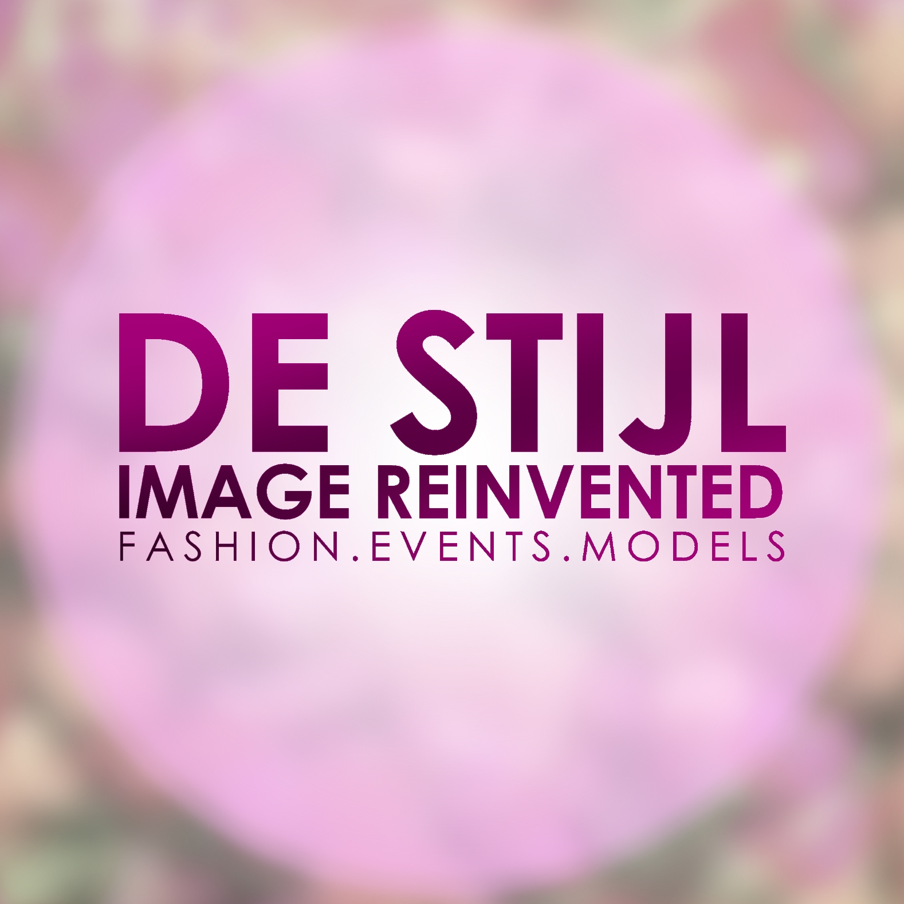

Occupational Background

De Stijl Image Reinvented
- Fashion & Event Photographer
- February 2021 - Present
- Serves in the creative team for various shows, editorial photoshoots, and event campaigns in the fashion industry of Baguio

Seven Links Marketing Solutions
- Team Leader
- January 2020 - March 2020
- Work Immersion for Senior High School
- Served as the team leader for one of the Philippines' pioneering teams of home-based work immersion for students
McDonald's - Bonifacio, Baguio City
- Service Crew
- May 2018 - June 2018
- Served in the customer service division of one of the biggest fast food companies in the world